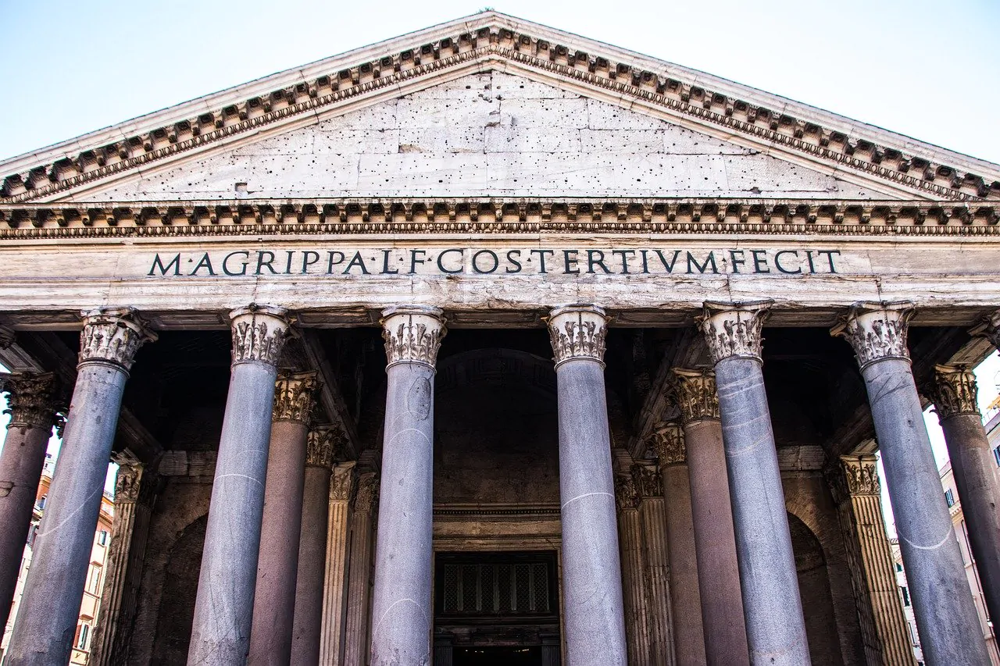

TECNOLOGIAS QUE TRANSFORMARAM UM IMPÉRIO
ÁREAS DA TECNOLOGIA ROMANA
-
ENGENHARIA E ARQUITETURA
Os romanos construiram obras grandiosas que impresionam até os dias de hoje pela durabilidade e precição
Saiba mais
-
TECNOLOGIA MILITAR
A superioridade militar romana tambem vinha de tecnologia aplicada em armamento, estrategias e logísticas.
Saiba mais
-
ENGENHARIA HIDRÁULICA
Aquedutos monumentais usavam a gravidade para transportar água por quilômetros, abastecendo fontes, termas e redes de esgoto subterrâneas.
Saiba mais
-
TECNOLOGIA DE TRANSPORTE
Estradas pavimentadas em camadas e pontes de pedra interconectavam o império, garantindo o deslocamento rápido de exércitos e mercadorias
Saiba mais
INOVAÇÃO EM DESTAQUE
CONCRETO POZOLÂNICO
O concreto pozolânico, feito com cinza vulcânica, foi a maior inovação romana: ele endurecia debaixo d'água, permitindo erguer portos indestrutíveis e cúpulas colossais como o Panteão.

LINHA DO TEMPO TECNOLOGIA ROMANA
-
312 A.C
VIA ÁPIA

-
150 A.C
CONCRETO POZOLÂNICO
-
113 D.C
MERCADO DE TRAJANO
-
126 D.C
CÚPULA DE PANTEÃO
-
271 D.C
MURALHA AURELIANA